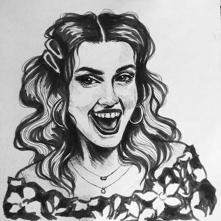

Meet Me
Loves: To learn, bike, dance, adventure, code, and listen to the Reciepts podcast.
Experience: I studied Mathematics at the University of Leeds, in which I developed my skills in Python and R.
Current: Living in Newcastle after two and a half years in Shanghai. Recently completed Python 1 and 2 from Robociti Women in Python course. Self-learning programs HTML, CSS, Bootstrap, Node, JQuery, SQL and Javascript with a Full Stack Development course by Udemy.
Future goals: Aspiring front-end web developer; ready to delve back into the coding world by learning new languages and their applications. My aim is to produce a range of projects with these languages and keep my work within the Projects section of this site.